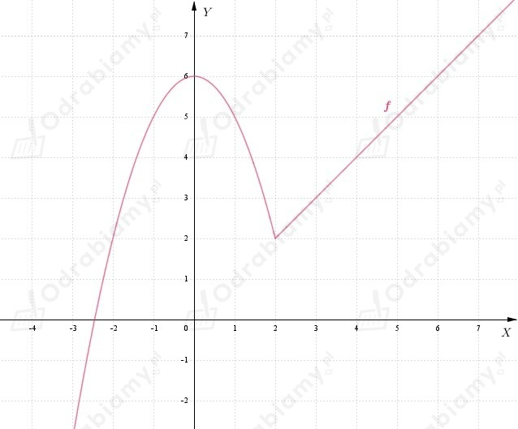
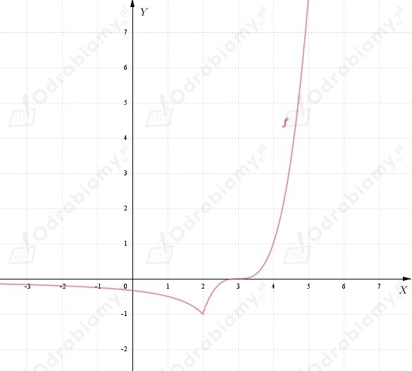

| Funkcja f: (a, b) → R jest ciągła w punkcie x0 ∈ (a, b) wtedy i tylko wtedy, gdy istnieje granica
oraz
|
a)
Należy wykazać, że funkcja:
jest ciągła w punkcie x0=2.
Obliczamy granice jednostronne w punkcie x0=2:
Wnioskujemy, że istnieje granica funkcji f w punkcie x0=2:
Ponadto:
więc:
Funkcja f jest zatem ciągła w punkcie x0=2.
Wykres funkcji f:

b)
Należy wykazać, że funkcja:
jest ciągła w punkcie x0=2.
Obliczamy granice jednostronne w punkcie x0=2:
Wnioskujemy, że istnieje granica funkcji f w punkcie x0=2:
Ponadto:
więc:
Funkcja f jest zatem ciągła w punkcie x0=2.
Wykres funkcji f:
